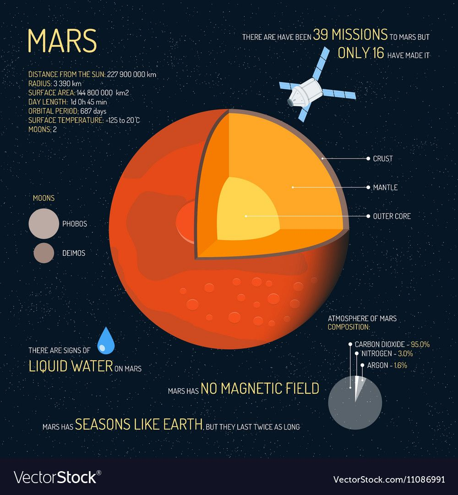
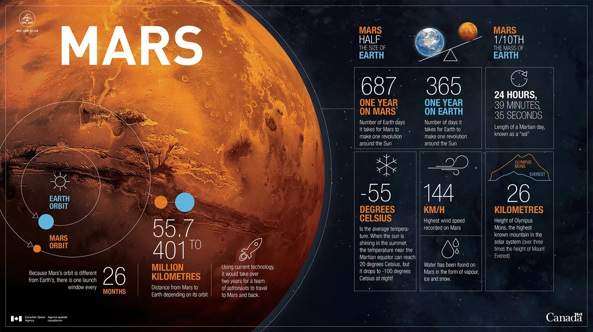
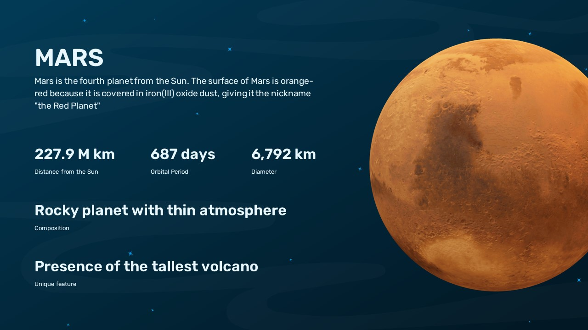
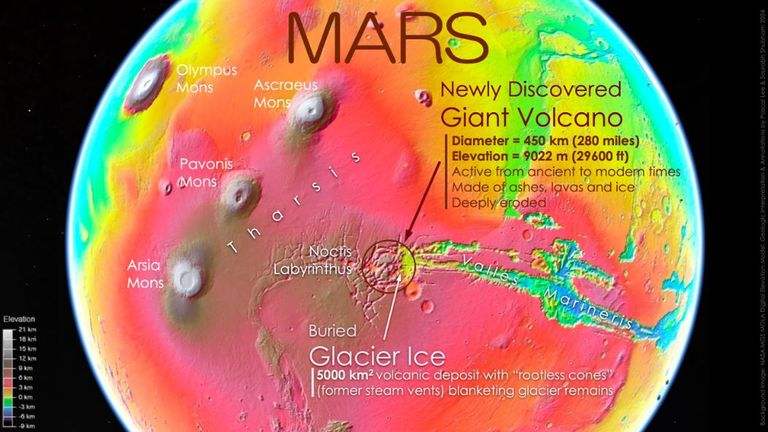

Mars
Mars is the fourth planet from the Sun and the second-smallest planet in the Solar System, being larger than only Mercury. In English, Mars carries the name of the Roman god of war and is often referred to as the "Red Planet".
Mars is a terrestrial planet with a thin atmosphere, having surface features reminiscent both of the impact craters of the Moon and the valleys, deserts, and polar ice caps of Earth. The days and seasons are comparable to those of Earth, because the rotational period as well as the tilt of the rotational axis relative to the ecliptic plane are similar.
Mars is currently host to eight artificial satellites orbiting it. They are used primarily for communication and reconnaissance, but some are also used for navigation and weather monitoring. The first spacecraft to visit Mars was Mariner 4 in 1965.
Mars' Landscapes



